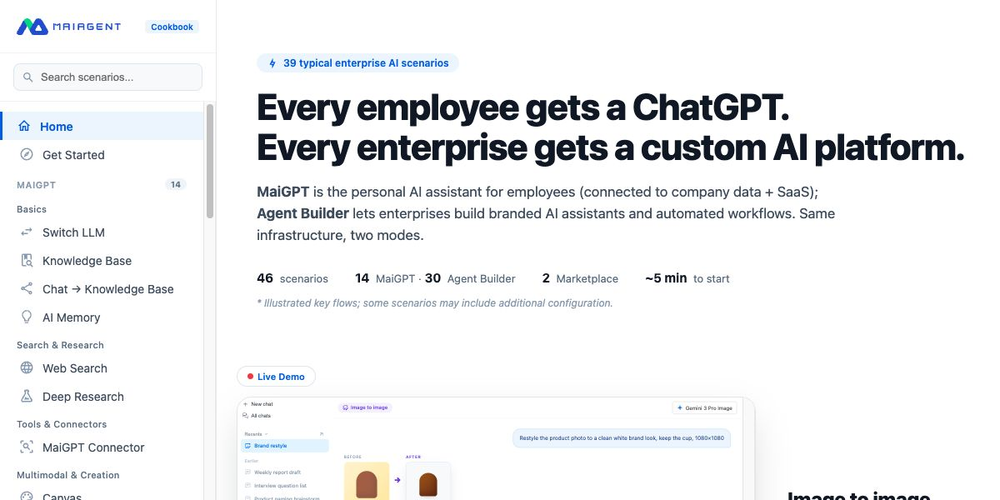

Show the product’s capabilities
Give marketing concrete, interactive examples to use when demonstrating the product to prospective customers.
Helping teams demonstrate the product and customers learn how to use it.
MaiAgent’s product cookbook served two purposes: helping marketing showcase what the product could do, and giving existing customers step-by-step guidance for using its features.
Give marketing concrete, interactive examples to use when demonstrating the product to prospective customers.
Explain how to use features through practical workflows and clear instructions that customers can follow themselves.

I researched recurring questions received by the support team, alongside questions marketing received about the product’s capabilities. These inputs helped me identify confusing features and practical scenarios worth showcasing.
I used those questions to decide which use cases to cover and how to explain them, grounding the cookbook in the needs of people evaluating and already using MaiAgent.
I translated those needs into interactive demonstrations and implementation guides. The demonstrations showed how product capabilities worked in concrete situations, while the guides explained the steps customers could follow themselves.
I independently handled the experience design, coding, content creation, and launch. I used Claude Code and other AI tools to support development while owning the project’s direction and delivery.
When users asked how to use a feature, the support team shared the relevant cookbook link. The guides helped resolve those feature-use questions.
The marketing team used the website as a demo to showcase MaiAgent’s capabilities during product conversations.
During the first two months after launch, the cookbook began attracting users. GA4 reported approximately three minutes of engagement on selected guide pages, suggesting visitors were taking time to explore the content and work through the instructions.
See the interactive demonstrations and step-by-step guides in the live product.
Visit MaiAgent Cookbook Back to all projects